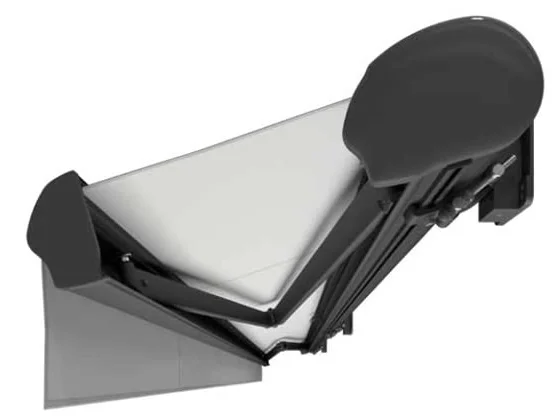

Dakar · puna kaseta
Zaobljena kaseta potpuno zatvara tkaninu i krakove kad je tenda uvučena, a dodatna brtva na prednjoj šipki još bolje štiti tkaninu. Bočni plastični poklopci obojeni su u boju konstrukcije. Opcijski se dodaju teleskopske potpore prednje šipke za veću otpornost na vjetar.
- IzvedbaPuna kaseta
- Maks. š × istak6,0 × 3,6 m
- PogonRučno ili električno
- Nagib5–40°